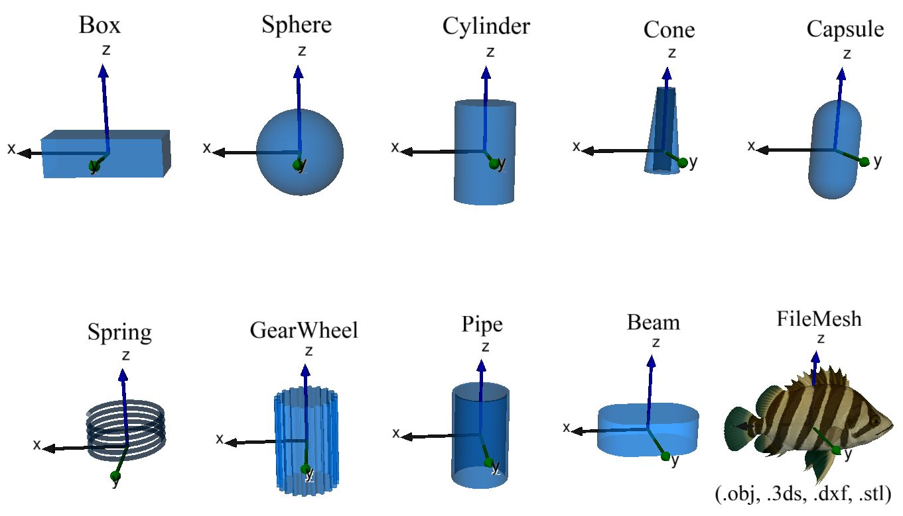
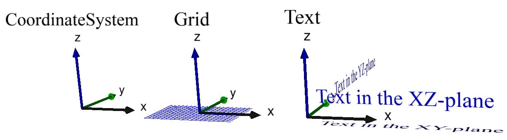

Graphics
Modia3D.Graphics — Module.module Modia3D.GraphicsVisual elements used for animation. The visual elements are passed to an external renderer. Currently, the (free) community edition and the (commercial) professional editions of the DLR Visualization library are supported (not all visualization elements of this library are yet interfaced to Modia3D). Modia3D is designed so that other renderers can be supported as well.
Visualization elements with geometry and visualization material:

Visualization elements that do not have a visualization material:

Main developers
Andrea Neumayr and Martin Otter, DLR - Institute of System Dynamics and Control ```
Modia3D.Graphics.colorPalette — Constant.const colorPaletteDictionary with default colors.
Modia3D.Graphics.Font — Type.font = Modia3D.Font(;fontFamily="FreeSans", bold=false, italic=false, charSize=0.1,
color="LightBlue", transparency=0.0)Return a Font definition.
Arguments
fontFamily::String: Font family ("FreeSans", "FreeSerif", "Arial", "ArialNarrow", "CourierNew", "TimesNewRoman", or "Verdana").bold::Bool: = true, if bold font.italic::Bool: = true, if italic font.charSize::Number: Character size in [m].color::Modia3D.RGBColor: Color; Examples: rgb("Blue"), rgb([0,0,255]), rgb(0,0,255).transparency::Number: 0.0 (opaque) ... 1.0 (transparent)
Examples
import Modia3D
font1 = Modia3D.Font()
font2 = Modia3D.Font(fontFamily="Arial", bold=true, charSize=0.2,
color="LightBlue", transparency=0.5)Modia3D.Graphics.Material — Type.material = Modia3D.Material(;color=defaultColor(), wireframe=false, transparency=0.0,
reflectslight=true, shininess=0.7,
shadowMask=CastsAndReceivesShadows))Return a material object that defines attributes for the visualization of an Object3D that has visual or solid properties.
Arguments
color: This argument is passed to functionModia3D.rgb(color)to return the RGB color value in form of a vector. E.g.color="Red"orcolor=[255,0,0].wireframe: = false, if solid, otherwise wireframe representation.transparency: = 0.0 (opaque) ... 1.0 (fully transparent).reflectslight: = true if it reflects light and false, if it does not reflect light.shininess: = 0.0 (matte surface) ... 1.0 (very shiny surface).shadowMask: defines whether or not an object casts or receives shadows. Possible values: NoShadows, CastsShadows, ReceivesShadows, CastsAndReceivesShadows.
Modia3D.Graphics.TextShape — Type.textShape = Modia3D.TextShape(text; font=Modia3D.Font(), offset=[0.0,0.0,0.0],
axisAlignment=Modia3D.Screen, alignment=Modia3D.Center)Return a text shape.
Arguments
text::AbstractString: String of the text.font::Modia3D.Font: Font of the text.offset::AbstractVector: Offset from origin to text alignment point.axisAlignment::Modia3D.AxisAlignment: Alignment of Text (parallel to screen or in planes of frame: = Modia3D.Screen, Modia3D.XYPlane, Modia3D.XZPlane, Modia3D.YZ_Plane).axisAlignment::Modia3D.Alignment: Alignment of Text relative to its origin (= Modia3D.Left, Modia3D.Right or Modia3D.Center).
Examples
import Modia3D
font = Modia3D.Font(fontFamily="Arial", charSize=0.4, color=Modia3D.rgb("Red"))
text1 = Modia3D.TextShape("This is a box")
text2 = Modia3D.TextShape("This is the xy plane";
font=font, axisAlignment=Modia3D.XY_Plane,
alignment=Modia3D.Left)Modia3D.Graphics.rgb — Method.color = rgb([name::String | vec::AbstractVector | r::Number,g::Number,b::Number])defines the color as a 3-vector of RGB values. Currently, the following names of colors are defined: Black, DarkRed, Red, LightRed, DarkGreen, Green, LightGreen, DarkBlue, Blue, LightBlue, Yello, Pink DarkGrey, Grey, White.
Examples
color1 = Modia3D.rgb("Red") # = [255,0,0]
color2 = Modia3D.rgb([255,0,0]) # = [255,0,0]
color3 = Modia3D.rgb(255,0,0) # = [255,0,0]